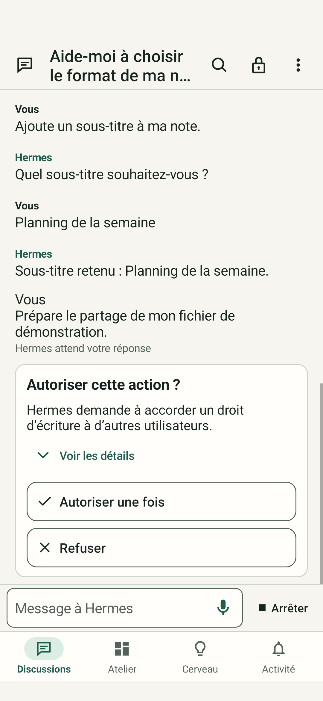
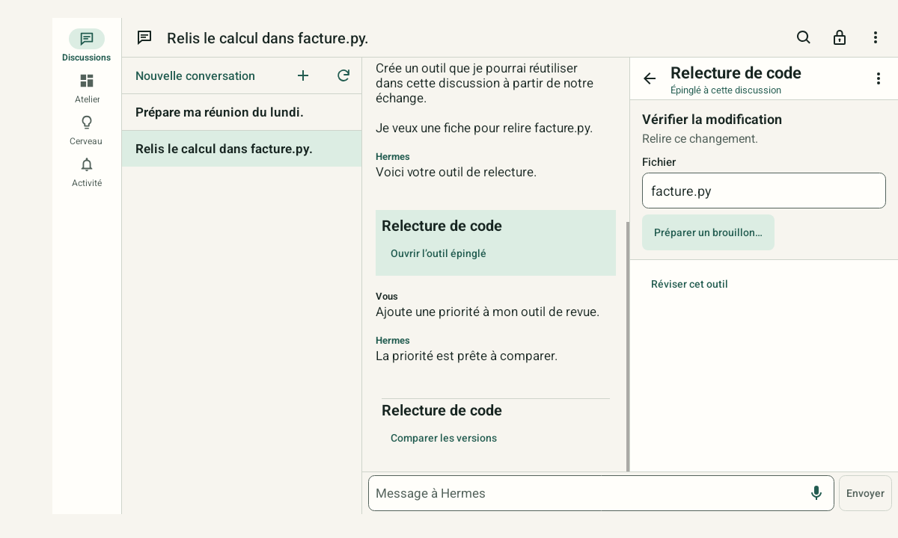
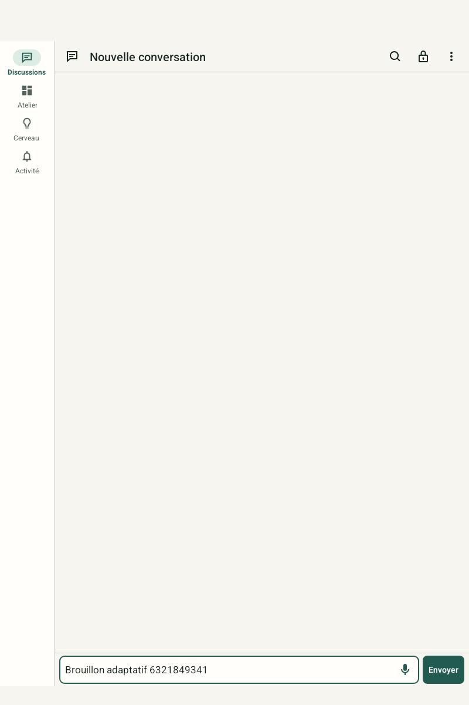
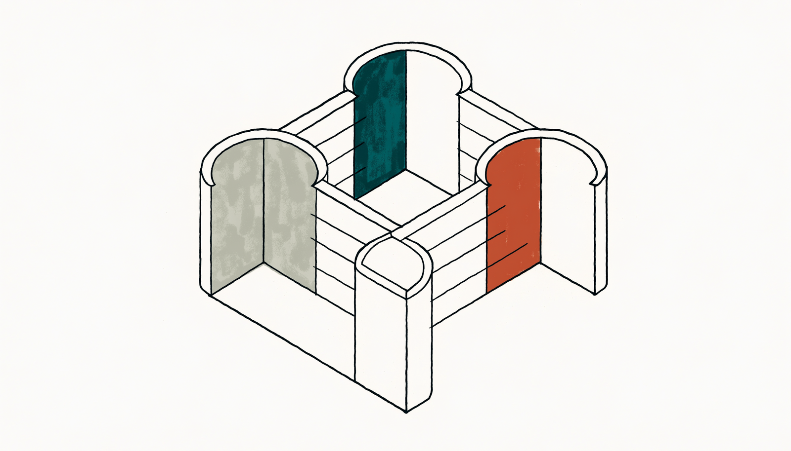

Phone
Conversation Transcript
Clean warm-paper reading column with selectable text, code previews, and composer in reach.
Click any capture to inspect it full-size. Every screenshot below comes directly from native Android device tests.
Clean warm-paper reading column with selectable text, code previews, and composer in reach.

Explicit Allow once / Deny review with expandable technical details before any action executes.

Selected images are scrubbed of EXIF/GPS metadata and staged beside your editable message.

Answer follow-up choices or dictate a custom response directly inside the conversation.

92 dp leading rail alongside the collapsible thread sidebar and full reading viewport.

Hermes-authored interactive forms share width equally with the active discussion above the composer.

Verified at 1.5x system font scale with zero clipped buttons and preserved 48 dp touch targets.

Orientation and multi-window transitions re-flow in place without locking or dropping drafts.

Warm walnut, honed travertine, and matte obsidian reflecting Hermes Mobile’s calm materiality.

Encrypted per-profile vaults linked by parallel non-blocking streams into one calm workspace.
Reserved gallery slots ready for upcoming English API 36 emulator verification screenshots.